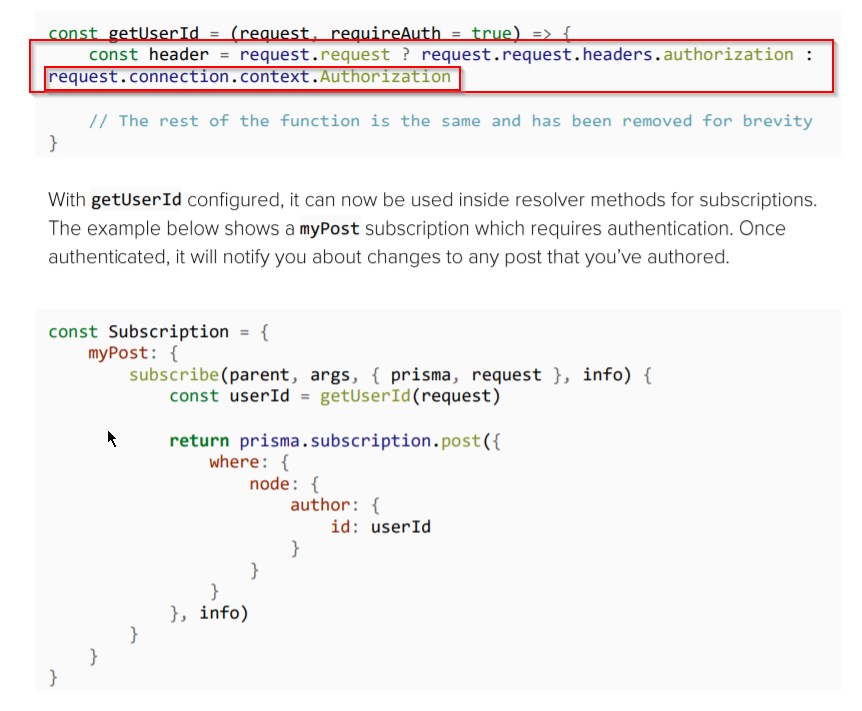

For this everything i.e our method for locking down will be similar. However, the jwt token will reside at a different place, which is request.connection.context.token. Thus we need to make a minor change to our middleware function in order to check the token
